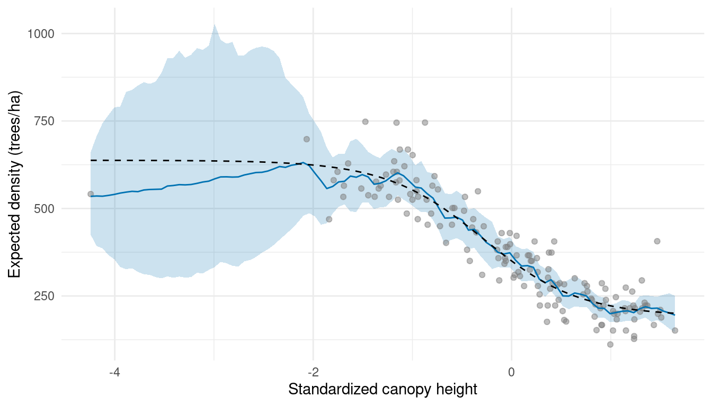
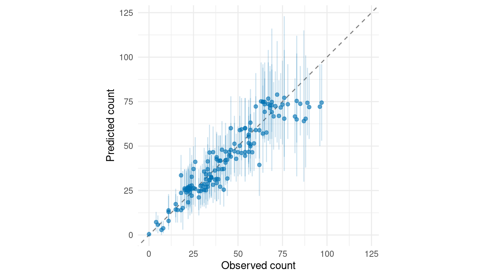
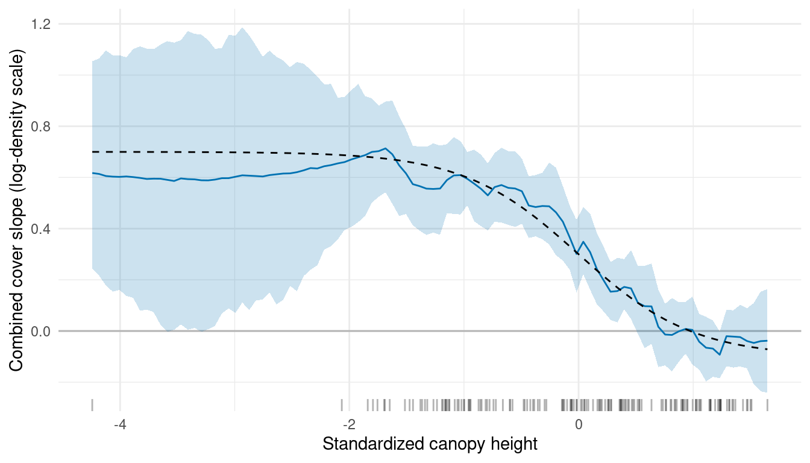
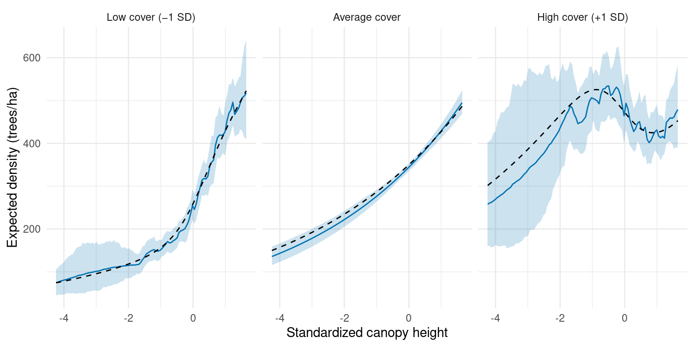

Nonlinear covariate effects and varying coefficients
Source:vignettes/articles/nonlinear-covariate-effects.qmd
The magnitude article related log tree density to canopy height with a linear regression. Here we allow that relationship to be nonlinear, using a Gaussian process to share information among similar canopy heights. This uses the same process machinery as the spatial article, but similarity is defined by canopy height rather than geographic distance.
We first estimate a nonlinear canopy-height relationship and predict counts at held-out plots. In a second example, we let the slope for canopy cover vary with canopy height. We compare both the estimated slope and the resulting density relationships with truth. Both examples use magnitude-only models.
Example data
Download the plot-sampling data (ZIP)
Extract it and use the folder containing data/ as your R working directory. We use its plot areas and canopy heights, described in the data article, and simulate new counts below.
Simulate a nonlinear relationship
We read the 151 sampled plots and select 150 prediction cells as holdouts. The supplied x column is p95 standardized using the sampled plots’ mean and standard deviation. We name it height here to make the formulas clear. Standardizing also gives the process a distance scale of one standard deviation of canopy height.
Let denote standardized canopy height. We generate expected density in trees/ha and total count on area hectares from
The hyperbolic tangent, tanh(), describes a decrease that levels off at shorter and taller canopy heights. At average canopy height the expected density is 350 trees/ha. We generate counts for both sets of locations, using only the sampled plots for fitting.
Fit a process over canopy height
We fit , where is a zero-mean Gaussian process. The default exponential covariance makes effects more similar at nearby heights. Its variance and decay are estimated. We do not supply the generating tanh() relationship to the model.
dat <- magCompData(plots, unit = plot_id, tree_count = count,
design = fixedArea(area))
fit <- magComp(
dat,
magnitude = ~ gp(height, name = "height_effect"),
composition = NULL,
control = magCompControl(n_samples = 6000, n_burn = 2000,
n_chains = 3, n_cores = 3, chain_seeds = 1:3,
nb_size = 1000, verbose = FALSE)
)
summary(fit) |>
select(symbol, mean, q2_5, q97_5, rhat, ess) |>
knitr::kable(digits = 3)| symbol | mean | q2_5 | q97_5 | rhat | ess |
|---|---|---|---|---|---|
| beta[0] | 5.931 | 5.357 | 6.457 | 1.492 | 13.846 |
| sigma_v^2 | 0.215 | 0.108 | 0.395 | 1.007 | 678.632 |
| phi_v | 0.348 | 0.257 | 0.624 | 1.017 | 239.845 |
Size is fixed at 1,000, following the default when magnitude has random effects. An explicit Gamma prior can request size estimation instead, as described in the stratum article. We use automatic priors and starting values for the other parameters.
The separate intercept has an R-hat of about 1.49, whereas those for the variance and decay are close to one. As in the spatial and stratum examples, the intercept and random effect can trade off. Their sum is the log expected density at height . We also inspect this combined coefficient, averaged over sampled plots within each draw.
summary(fit, type = "combined", group = ".all") |>
select(coefficient, mean, q2_5, q97_5, rhat, ess) |>
knitr::kable(digits = 3)| coefficient | mean | q2_5 | q97_5 | rhat | ess |
|---|---|---|---|---|---|
| (Intercept) | 5.837 | 5.811 | 5.864 | 1 | 1463.254 |
The combined coefficient has an R-hat close to one, supporting its use to describe the density relationship despite the separate intercept’s slower mixing.
Compare the estimated relationship with truth
We predict along a sequence of canopy heights. The expected target returns draws of , including uncertainty in the process and its parameters. Its interval describes the mean relationship, rather than the additional variation of a new tree count. Here plot_id labels evaluation points; their heights determine the process predictions. We use 200 draws per chain for predictions.
height_grid <- tibble(
plot_id = 1:100,
height = seq(min(plots$height), max(plots$height), length.out = 100)
) |>
mutate(truth = 350 * exp(-0.6 * tanh(height)))
set.seed(1)
relationship <- predict(fit, height_grid, type = "magnitude",
target = "expected", summary = "samples", n_draws = 200)
relationship_summary <- summary(relationship) |>
mutate(plot_id = as.integer(unit)) |>
left_join(height_grid, by = "plot_id")
ggplot(relationship_summary, aes(height, mean)) +
geom_ribbon(aes(ymin = q2_5, ymax = q97_5), fill = "#0072B2", alpha = 0.2) +
geom_point(data = plots, aes(y = count / area), color = "grey50", alpha = 0.5) +
geom_line(color = "#0072B2") +
geom_line(aes(y = truth), linetype = "dashed") +
labs(x = "Standardized canopy height", y = "Expected density (trees/ha)") +
theme_minimal()
The estimate follows the nonlinear decrease where sampled heights are well represented. The wide band between the shortest plot and the remaining plots reflects how little information is available there.
Predict held-out counts
For a new count we use the observation target, which also draws from the negative-binomial distribution using each holdout’s area. The generating counts provide a comparison that was not available during fitting.
set.seed(1)
predictions <- predict(fit, holdout, type = "count", target = "observation",
summary = "samples", n_draws = 200)
prediction_summary <- summary(predictions) |>
mutate(plot_id = as.integer(unit)) |>
left_join(holdout, by = "plot_id")
count_limits <- c(0, max(prediction_summary$count, prediction_summary$q97_5))
ggplot(prediction_summary, aes(count, mean)) +
geom_abline(intercept = 0, slope = 1, linetype = "dashed", color = "grey50") +
geom_errorbar(aes(ymin = q2_5, ymax = q97_5), width = 0,
color = "#0072B2", alpha = 0.2) +
geom_point(color = "#0072B2", alpha = 0.6) +
coord_equal(xlim = count_limits, ylim = count_limits) +
labs(x = "Observed count", y = "Predicted count") +
theme_minimal()
Let a slope vary with canopy height
A canopy-cover effect might differ between short and tall stands. The stratum-slope article let a coefficient differ among strata; here a coefficient varies continuously with canopy height. We reuse the plot areas and heights, simulate canopy cover between 20% and 90%, and generate new counts for this second example. With denoting standardized cover, the generating model is
At fixed height, increasing cover by one standard deviation multiplies expected density by . Cover has a stronger positive association with density at shorter canopy heights in this population. At average height, , so this increase in cover multiplies density by , about 1.35.
We fit the model
The fixed cover term supplies , and cover:gp(height) supplies . Together they estimate the cover slope . In cover:gp(height), height determines where the coefficient varies, and cover multiplies that coefficient in the regression.
varying_dat <- magCompData(varying_plots, unit = plot_id, tree_count = count,
design = fixedArea(area))
varying_fit <- magComp(
varying_dat,
magnitude = ~ height + cover + cover:gp(height, name = "cover_slope"),
composition = NULL,
control = magCompControl(n_samples = 6000, n_burn = 2000,
n_chains = 3, n_cores = 3, chain_seeds = 1:3,
nb_size = 1000, verbose = FALSE)
)
summary(varying_fit) |>
select(symbol, mean, q2_5, q97_5, rhat, ess) |>
knitr::kable(digits = 3)| symbol | mean | q2_5 | q97_5 | rhat | ess |
|---|---|---|---|---|---|
| beta[0] | 5.841 | 5.813 | 5.869 | 1.001 | 1216.162 |
| beta[height] | 0.220 | 0.188 | 0.252 | 1.004 | 1043.532 |
| beta[cover] | 0.241 | -0.179 | 0.743 | 1.046 | 25.568 |
| sigma_v^2 | 0.183 | 0.094 | 0.344 | 1.002 | 621.065 |
| phi_v | 0.349 | 0.256 | 0.610 | 1.002 | 255.934 |
As with the intercept above, we inspect the combined cover slope, averaged over sampled plots within each draw.
summary(varying_fit, type = "combined", group = ".all") |>
select(coefficient, mean, q2_5, q97_5, rhat, ess) |>
knitr::kable(digits = 3)| coefficient | mean | q2_5 | q97_5 | rhat | ess |
|---|---|---|---|---|---|
| cover | 0.284 | 0.255 | 0.312 | 1 | 1268.408 |
Compare true and estimated slopes
We retain predicted effects with keep_effects = TRUE, then use samples(..., type = "combined") to add the fixed slope and process within each draw. cover = 0 supplies the reference cover value needed for response prediction; the extracted coefficient is the slope itself, before it is multiplied by cover.
slope_grid <- height_grid |>
mutate(cover = 0, true_slope = 0.3 - 0.4 * tanh(height))
set.seed(1)
slope_predictions <- predict(varying_fit, slope_grid, type = "magnitude",
target = "expected", summary = "samples", n_draws = 200, keep_effects = TRUE)
slope_summary <- summary(samples(slope_predictions, type = "combined")) |>
filter(coefficient == "cover") |>
mutate(plot_id = as.integer(unit)) |>
left_join(slope_grid, by = "plot_id")
ggplot(slope_summary, aes(height, mean)) +
geom_hline(yintercept = 0, color = "grey70") +
geom_ribbon(aes(ymin = q2_5, ymax = q97_5), fill = "#0072B2", alpha = 0.2) +
geom_line(color = "#0072B2") +
geom_line(aes(y = true_slope), linetype = "dashed") +
geom_rug(data = plots, aes(x = height), inherit.aes = FALSE, alpha = 0.3) +
labs(x = "Standardized canopy height", y = "Combined cover slope (log-density scale)") +
theme_minimal()
The vertical axis is a slope on the log-density scale. Positive values mean that greater cover is associated with higher expected density at that height; zero means no association, and negative values mean a decrease. The estimated slope follows the generating relationship, with greater uncertainty at heights poorly represented by the sampled plots.
Show the resulting density relationships
To see what these slopes imply in trees/ha, we predict expected density at low, average, and high cover, defined as one standard deviation below the sample mean, the mean itself, and one standard deviation above it. Each row of the prediction table is one height–cover combination. Rows at the same height share the predicted process effect, which is multiplied by their respective cover values.
cover_grid <- expand_grid(height = height_grid$height, cover = c(-1, 0, 1)) |>
mutate(plot_id = row_number(),
truth = exp(log(350) + 0.2 * height +
(0.3 - 0.4 * tanh(height)) * cover),
cover_level = factor(cover, levels = c(-1, 0, 1),
labels = c("Low cover (−1 SD)", "Average cover", "High cover (+1 SD)")))
set.seed(1)
cover_predictions <- predict(varying_fit, cover_grid, type = "magnitude",
target = "expected", summary = "samples", n_draws = 200)
cover_summary <- summary(cover_predictions) |>
mutate(plot_id = as.integer(unit)) |>
left_join(cover_grid, by = "plot_id")
ggplot(cover_summary, aes(height, mean)) +
geom_ribbon(aes(ymin = q2_5, ymax = q97_5), fill = "#0072B2", alpha = 0.2) +
geom_line(color = "#0072B2") +
geom_line(aes(y = truth), linetype = "dashed") +
facet_wrap(~ cover_level, nrow = 1) +
labs(x = "Standardized canopy height", y = "Expected density (trees/ha)") +
theme_minimal()
At shorter canopy heights, the positive cover slope gives higher densities in the high-cover panel. The differences shrink as the cover slope approaches zero at taller heights. At average cover, , so the curve depends only on the intercept and linear height term. Its narrower band reflects uncertainty in those coefficients; the other panels also include uncertainty in the height-dependent cover effect.
Extend the same ideas
gp(height, cover) defines a process over two covariates using Euclidean distance. Their scales therefore matter; standardize or otherwise scale them to express a meaningful distance before fitting. A process with identical inputs shares one latent effect across observations. Each observation still needs its own unit ID to keep its count and area separate. Shared effects do not force equal counts or expected densities when other covariates differ.
For larger datasets, nngp(height, m = 15) uses the nearest-neighbor approximation with neighbors in covariate space. Both forms support the same varying-coefficient syntax. These terms describe covariate relationships; geographic coordinates would be needed for an additional spatial effect.
Composition models use factor_gp() or factor_nngp() in the same way. For example, a species formula could include species ~ cover + cover:factor_gp(height, K = 1, anchors = "pine"). The shared factor and species loadings then let cover slopes vary with height on the probit allocation scale. The conditional DBH article explains how factor terms can also enter dbh_class | species.
Forest or stand summaries still use posterior predictive density draws and area weighting with standSummary(), as in the magnitude article. The space-time article shows how to identify separate measurements when plots are revisited and how their effects are shared.